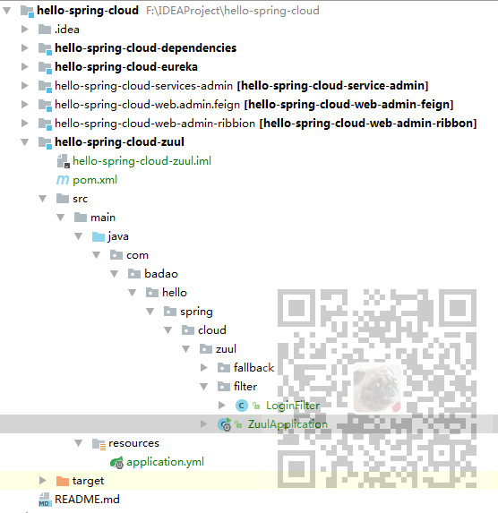
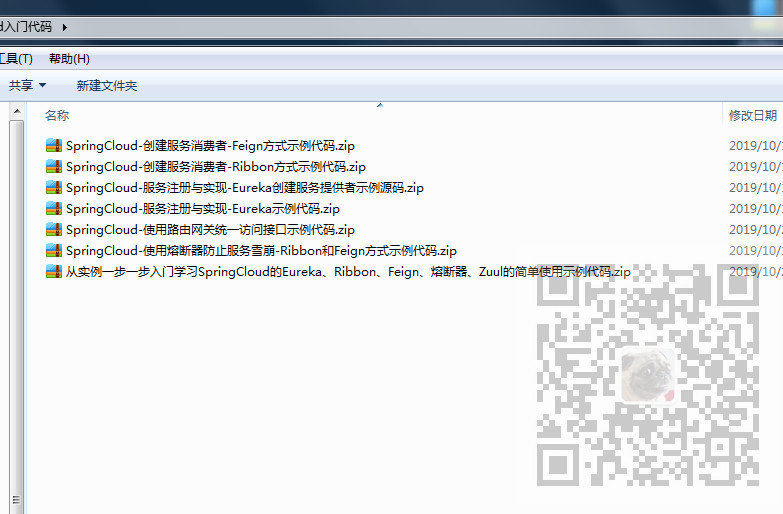

原文连接:https://www.cnblogs.com/badaoliumangqizhi/p/11741120.html
场景
SpringCloud -创建统一的依赖管理：
https://blog.csdn.net/BADAO_LIUMANG_QIZHI/article/details/102530574
SpringCloud-服务注册与实现-Eureka创建服务注册中心(附源码下载)：
https://blog.csdn.net/BADAO_LIUMANG_QIZHI/article/details/102535957
SpringCloud-服务注册与实现-Eureka创建服务提供者(附源码下载)：
https://blog.csdn.net/BADAO_LIUMANG_QIZHI/article/details/102558004
SpringCloud-创建服务消费者-Ribbon方式(附代码下载):
https://blog.csdn.net/BADAO_LIUMANG_QIZHI/article/details/102558080
SpringCloud-创建服务消费者-Feign方式(附代码下载):
https://blog.csdn.net/BADAO_LIUMANG_QIZHI/article/details/102595895
SpringCloud-使用熔断器防止服务雪崩-Ribbon和Feign方式(附代码下载):
https://blog.csdn.net/BADAO_LIUMANG_QIZHI/article/details/102616697
SpringCloud-使用路由网关统一访问接口(附代码下载):
https://blog.csdn.net/BADAO_LIUMANG_QIZHI/article/details/102733039
SpringCloud-使用路由网关的服务过滤功能-拦截登录前是否有token为例:
实现
项目目前结构

各阶段示例代码

代码下载
关注公众号：
霸道的程序猿
回复：
SpringCloud入门代码